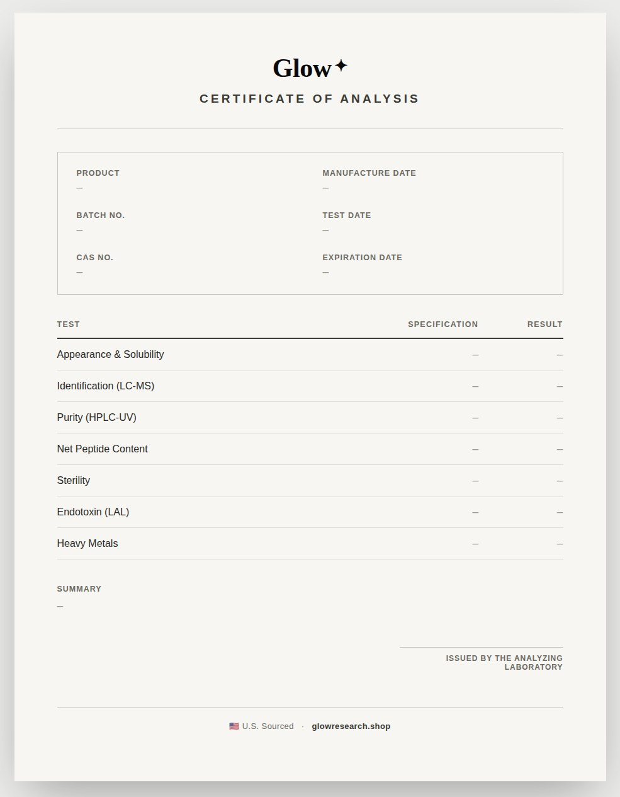

Seven tests.
Every batch.
Every lot is tested by an independent laboratory before it reaches our catalog. No exceptions.
reverse-phase HPLC-UV for purity, LC-MS for identity, net peptide content, sterility testing, endotoxin testing by LAL assay under USP chapter 85, appearance and solubility inspection, heavy metals screening, and lot archival linking every batch to its certificate.
What gets checked.
Seven separate analyses, run on the lot before it is released for sale.
Purity
Reverse-phase HPLC-UVHow much of the powder is the peptide you ordered. This is the percentage printed on the certificate.
Identity
LC-MSWeighs the molecule to confirm it is the one on the label, not something close to it.
Net peptide content
How many milligrams of actual peptide are in the vial once salt and water are taken out.
Sterility
The lot is cultured to see whether anything grows. Nothing should.
Endotoxin
LAL assay, USP chapter 85Checks for bacterial toxin, which is left behind even after the bacteria themselves are gone.
Appearance and solubility
The powder is looked at and dissolved. It should look right and go into solution cleanly.
Heavy metals
Screens for lead, arsenic and the other metals that can carry over from manufacturing.
We do not run any of these tests.
Glow does not manufacture and does not operate a laboratory. Every result comes from an independent lab with no stake in the outcome, and the certificate is issued by them, not by us. That is the whole point of it.
Documented, not claimed.
A certificate is only worth anything if it is specific. Every result is tied to the lot number printed on your vial, not to the product in general. This is the structure every one follows.
- Every test above, with its result
- One lot number, matching the vial in your hand
- The lab that ran it, and the date they ran it
